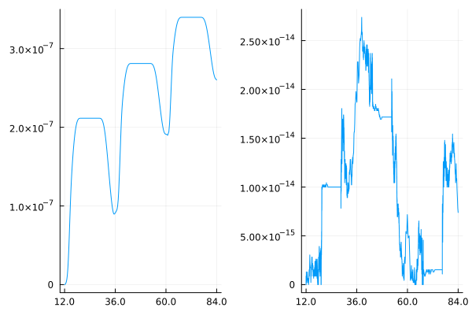

Tutorial: Solution of a stratospheric reaction problem
This tutorial is about the efficient solution of a stiff non-autonomous and non-conservative production-destruction systems (PDS) with a small number of differential equations. We will compare the use of standard arrays and static arrays from StaticArrays.jl and assess their efficiency.
Definition of the production-destruction system
This stratospheric reaction problem was described by Adrian Sandu in Positive Numerical Integration Methods for Chemical Kinetic Systems, see also the paper Positivity-preserving adaptive Runge–Kutta methods by Stefan Nüßlein, Hendrik Ranocha and David I. Ketcheson. The governing equations are
\[\begin{aligned} \frac{dO^{1D}}{dt} &= r_5 - r_6 - r_7,\\ \frac{dO}{dt} &= 2r_1 - r_2 + r_3 - r_4 + r_6 - r_9 + r_{10} - r_{11},\\ \frac{dO_3}{dt} &= r_2 - r_3 - r_4 - r_5 - r_7 - r_8,\\ \frac{dO_2}{dt} &= -r_1 -r_2 + r_3 + 2r_4+r_5+2r_7+r_8+r_9,\\ \frac{dNO}{dt} &= -r_8+r_9+r_{10}-r_{11},\\ \frac{dNO_2}{dt} &= r_8-r_9-r_{10}+r_{11}, \end{aligned}\]
with reaction rates
\[\begin{aligned} r_1 &=2.643⋅ 10^{-10}σ^3 O_2, & r_2 &=8.018⋅10^{-17}O O_2 , & r_3 &=6.12⋅10^{-4}σ O_3,\\ r_4 &=1.567⋅10^{-15}O_3 O , & r_5 &= 1.07⋅ 10^{-3}σ^2O_3, & r_6 &= 7.11⋅10^{-11}⋅ 8.12⋅10^6 O^{1D},\\ r_7 &= 1.2⋅10^{-10}O^{1D} O_3, & r_8 &= 6.062⋅10^{-15}O_3 NO, & r_9 &= 1.069⋅10^{-11}NO_2 O,\\ r_{10} &= 1.289⋅10^{-2}σ NO_2, & r_{11} &= 10^{-8}NO O, \end{aligned}\]
where
\[\begin{aligned} T &= t/3600 \mod 24,\quad T_r=4.5,\quad T_s = 19.5,\\ σ(T) &= \begin{cases}1, & T_r≤ T≤ T_s,\\0, & \text{otherwise}.\end{cases} \end{aligned}\]
Setting $\mathbf u = (O^{1D}, O, O_3, O_2, NO, NO_2)$ the initial value is $\mathbf{u}_0 = (9.906⋅10^1, 6.624⋅10^8, 5.326⋅10^{11}, 1.697⋅10^{16}, 4⋅10^6, 1.093⋅10^9)^T$. The time domain in seconds is $[4.32⋅10^{4}, 3.024⋅10^5]$, which corresponds to $[12.0, 84.0]$ in hours. There are two independent linear invariants, e.g. $u_1+u_2+3u_3+2u_4+u_5+2u_6=(1,1,3,2,1,2)\cdot\mathbf{u}_0$ and $u_5+u_6 = 1.097⋅10^9$.
The stratospheric reaction problem can be represented as a (non-conservative) PDS with production terms
\[\begin{aligned} p_{13} &= r_5, & p_{21} &= r_6, & p_{22} &= r_1+r_{10},\\ p_{23} &= r_3, & p_{24} &= r_1,& p_{32} &= r_2,\\ p_{41} &= r_7, & p_{42}&= r_4+r_9, & p_{43}&= r_4+r_7+r_8,\\ p_{44} &= r_3+r_5, & p_{56}&=r_9+r_{10}, & p_{65}&=r_8+r_{11}. \end{aligned}\]
and additional destruction terms
\[\begin{aligned} d_{22}&= r_{11}, & d_{44}&=r_2. \end{aligned}\]
In addition, all production and destruction terms not listed have the value zero.
Solution of the production-destruction system
Now we are ready to define a PDSProblem and to solve this problem with a method of PositiveIntegrators.jl or OrdinaryDiffEq.jl.
As mentioned above, we will try different approaches to solve this PDS and compare their efficiency. These are
- an out-of-place implementation with standard (dynamic) matrices and vectors,
- an in-place implementation with standard (dynamic) matrices and vectors,
- an out-of-place implementation with static matrices and vectors from StaticArrays.jl.
Standard out-of-place implementation
Here we create an out-of-place function to compute the production matrix with return type Matrix{Float64} and a second out-of-place function for the destruction vector with return type Vector{Float64}.
using PositiveIntegrators # load PDSProblemfunction prod(u, p, t) O1D, O, O3, O2, NO, NO2 = u Tr = 4.5 Ts = 19.5 T = mod(t / 3600, 24) if (Tr <= T) && (T <= Ts) Tfrac = (2 * T - Tr - Ts) / (Ts - Tr) sigma = 0.5 + 0.5 * cos(pi * abs(Tfrac) * Tfrac) else sigma = 0.0 end M = 8.120e16 k1 = 2.643e-10 * sigma^3 k2 = 8.018e-17 k3 = 6.120e-4 * sigma k4 = 1.567e-15 k5 = 1.070e-3 * sigma^2 k6 = 7.110e-11 k7 = 1.200e-10 k8 = 6.062e-15 k9 = 1.069e-11 k10 = 1.289e-2 * sigma k11 = 1.0e-8 r1 = k1 * O2 r2 = k2 * O * O2 r3 = k3 * O3 r4 = k4 * O3 * O r5 = k5 * O3 r6 = k6 * M * O1D r7 = k7 * O1D * O3 r8 = k8 * O3 * NO r9 = k9 * NO2 * O r10 = k10 * NO2 r11 = k11 * NO * O return [0.0 0.0 r5 0.0 0.0 0.0; r6 r1+r10 r3 r1 0.0 0.0; 0.0 r2 0.0 0.0 0.0 0.0; r7 r4+r9 r4+r7+r8 r3+r5 0.0 0.0; 0.0 0.0 0.0 0.0 0.0 r9+r10; 0.0 0.0 0.0 0.0 r8+r11 0.0]endfunction dest(u, p, t) O1D, O, O3, O2, NO, NO2 = u k2 = 8.018e-17 k11 = 1.0e-8 r2 = k2 * O * O2 r11 = k11 * NO * O return [0.0, r11, 0.0, r2, 0.0, 0.0]endThe solution of the stratospheric reaction problem can now be computed as follows.
u0 = [9.906e1, 6.624e8, 5.326e11, 1.697e16, 4e6, 1.093e9] # initial valuestspan = (4.32e4, 3.024e5) # time domainprob_oop = PDSProblem(prod, dest, u0, tspan) # create the PDSsol_oop = solve(prob_oop, MPRK43I(1.0, 0.5))Plotting the solution shows that the components $O¹ᴰ$, $O$ and $NO$ are in danger of becoming negative.
using Plotsplot(sol_oop, layout=(3,2), xguide = "t [h]", xguidefontsize = 8, xticks = (range(first(tspan), last(tspan), 4), range(12.0, 84.0, 4)), yguide=["O¹ᴰ" "O" "O₃" "O₂" "NO" "NO₂"], tickfontsize = 7, legend = :none, widen = true )
PositiveIntegrators.jl provides the function isnonnegative (and also isnegative) to check if the solution is actually nonnegative, as expected from an MPRK scheme.
isnonnegative(sol_oop)trueStandard in-place implementation
Next we create in-place functions for the production matrix and the destruction vector.
function prod!(P, u, p, t) O1D, O, O3, O2, NO, NO2 = u Tr = 4.5 Ts = 19.5 T = mod(t / 3600, 24) if (Tr <= T) && (T <= Ts) Tfrac = (2 * T - Tr - Ts) / (Ts - Tr) sigma = 0.5 + 0.5 * cos(pi * abs(Tfrac) * Tfrac) else sigma = 0.0 end M = 8.120e16 k1 = 2.643e-10 * sigma^3 k2 = 8.018e-17 k3 = 6.120e-4 * sigma k4 = 1.567e-15 k5 = 1.070e-3 * sigma^2 k6 = 7.110e-11 k7 = 1.200e-10 k8 = 6.062e-15 k9 = 1.069e-11 k10 = 1.289e-2 * sigma k11 = 1.0e-8 r1 = k1 * O2 r2 = k2 * O * O2 r3 = k3 * O3 r4 = k4 * O3 * O r5 = k5 * O3 r6 = k6 * M * O1D r7 = k7 * O1D * O3 r8 = k8 * O3 * NO r9 = k9 * NO2 * O r10 = k10 * NO2 r11 = k11 * NO * O fill!(P, zero(eltype(P))) P[1, 3] = r5 P[2, 1] = r6 P[2, 2] = r1 + r10 P[2, 3] = r3 P[2, 4] = r1 P[3, 2] = r2 P[4, 1] = r7 P[4, 2] = r4 + r9 P[4, 3] = r4 + r7 + r8 P[4, 4] = r3 + r5 P[5, 6] = r9 + r10 P[6, 5] = r8 + r11 return nothingendfunction dest!(D, u, p, t) O1D, O, O3, O2, NO, NO2 = u k2 = 8.018e-17 k11 = 1.0e-8 r2 = k2 * O * O2 r11 = k11 * NO * O fill!(D, zero(eltype(D))) D[2] = r11 D[4] = r2 return nothingendThe solution of the in-place implementation of the stratospheric reaction problem can now be computed as follows.
prob_ip = PDSProblem(prod!, dest!, u0, tspan) # create the PDSsol_ip = solve(prob_ip, MPRK43I(1.0, 0.5))plot(sol_ip, layout=(3,2), xguide = "t [h]", xguidefontsize = 8, xticks = (range(first(tspan), last(tspan), 4), range(12.0, 84.0, 4)), yguide=["O¹ᴰ" "O" "O₃" "O₂" "NO" "NO₂"], tickfontsize = 7, legend = :none, widen = true )
We also check that the in-place and out-of-place solutions are equivalent.
sol_oop.t ≈ sol_ip.t && sol_oop.u ≈ sol_ip.utrueUsing static arrays
For PDS with a small number of differential equations like the stratospheric reaction model the use of static arrays will be more efficient. To create a function which computes the production matrix and returns a static matrix, we only need to add the @SMatrix macro. Accordingly, we use the @SVector macro for the destruction vector.
using StaticArraysfunction prod_static(u, p, t) O1D, O, O3, O2, NO, NO2 = u Tr = 4.5 Ts = 19.5 T = mod(t / 3600, 24) if (Tr <= T) && (T <= Ts) Tfrac = (2 * T - Tr - Ts) / (Ts - Tr) sigma = 0.5 + 0.5 * cos(pi * abs(Tfrac) * Tfrac) else sigma = 0.0 end M = 8.120e16 k1 = 2.643e-10 * sigma^3 k2 = 8.018e-17 k3 = 6.120e-4 * sigma k4 = 1.567e-15 k5 = 1.070e-3 * sigma^2 k6 = 7.110e-11 k7 = 1.200e-10 k8 = 6.062e-15 k9 = 1.069e-11 k10 = 1.289e-2 * sigma k11 = 1.0e-8 r1 = k1 * O2 r2 = k2 * O * O2 r3 = k3 * O3 r4 = k4 * O3 * O r5 = k5 * O3 r6 = k6 * M * O1D r7 = k7 * O1D * O3 r8 = k8 * O3 * NO r9 = k9 * NO2 * O r10 = k10 * NO2 r11 = k11 * NO * O return @SMatrix [0.0 0.0 r5 0.0 0.0 0.0; r6 r1+r10 r3 r1 0.0 0.0; 0.0 r2 0.0 0.0 0.0 0.0; r7 r4+r9 r4+r7+r8 r3+r5 0.0 0.0; 0.0 0.0 0.0 0.0 0.0 r9+r10; 0.0 0.0 0.0 0.0 r8+r11 0.0]endfunction dest_static(u, p, t) O1D, O, O3, O2, NO, NO2 = u k2 = 8.018e-17 k11 = 1.0e-8 r2 = k2 * O * O2 r11 = k11 * NO * O return @SVector [0.0, r11, 0.0, r2, 0.0, 0.0]endIn addition we also want to use a static vector to hold the initial conditions.
u0_static = @SVector [9.906e1, 6.624e8, 5.326e11, 1.697e16, 4e6, 1.093e9] # initial valuesprob_static = PDSProblem(prod_static, dest_static, u0_static, tspan) # create the PDSsol_static = solve(prob_static, MPRK43I(1.0, 0.5))This solution is also nonnegative.
isnonnegative(sol_static)trueusing Plotsplot(sol_static, layout=(3,2), xguide = "t [h]", xguidefontsize = 8, xticks = (range(first(tspan), last(tspan), 4), range(12.0, 84.0, 4)), yguide=["O¹ᴰ" "O" "O₃" "O₂" "NO" "NO₂"], tickfontsize = 7, legend = :none, widen = true )
The above implementation of the stratospheric reaction problem using StaticArrays can also be found in the Example Problems as prob_pds_stratreac.
Preservation of linear invariants
As MPRK schemes do not preserve general linear invariants, especially when applied to non-conservative PDS, we compute and plot the relative errors with respect to both linear invariants to see how well these are preserved.
linear_invariant(a, u) = sum(a .* u)function relerr_lininv(a, u0, sol) c = linear_invariant(a, u0) return abs.(c .- (x -> linear_invariant(a, x)).(sol.u))./cenda1 = [1; 1; 3; 2; 1; 2] # first linear invarianta2 = [0; 0; 0; 0; 1; 1] # second linear invariantp1 = plot(sol_oop.t, relerr_lininv(a1, u0, sol_oop))p2 = plot(sol_oop.t, relerr_lininv(a2, u0, sol_oop))plot(p1, p2, xticks = (range(first(tspan), last(tspan), 4), range(12.0, 84.0, 4)), legend = :none)
In contrast to MPRK schemes, Runge-Kutta and Rosenbrock methods preserve all linear invariants, but are not guaranteed to generate nonnegative solutions. One way to enforce nonnegative solutions of such schemes is passing isnegative to the solver option isoutofdomain. We show this using the Rosenbrock scheme Rosenbrock23 as an example.
using OrdinaryDiffEqRosenbrocksol_tmp = solve(prob_oop, Rosenbrock23());isnonnegative(sol_tmp)falsesol_Ros23 = solve(prob_oop, Rosenbrock23(), isoutofdomain = isnegative);isnonnegative(sol_Ros23)truep3 = plot(sol_Ros23.t, relerr_lininv(a1, u0, sol_Ros23))p4 = plot(sol_Ros23.t, relerr_lininv(a2, u0, sol_Ros23))plot(p3, p4, xticks = (range(first(tspan), last(tspan), 4), range(12.0, 84.0, 4)), legend = :none)
Performance comparison
Finally, we use BenchmarkTools.jl to compare the different implementations and to show the benefit of using static arrays.
using BenchmarkTools@benchmark solve(prob_oop, MPRK43I(1.0, 0.5))BenchmarkTools.Trial: 9 samples with 1 evaluation per sample.
Range (min … max): 567.571 ms … 642.848 ms ┊ GC (min … max): 9.43% … 21.29%
Time (median): 619.370 ms ┊ GC (median): 16.72%
Time (mean ± σ): 612.908 ms ± 27.784 ms ┊ GC (mean ± σ): 15.89% ± 3.83%
█ █ █ █ █ █ █ █ █
█▁█▁▁▁▁▁▁▁▁▁▁▁▁▁▁▁▁▁▁▁▁▁▁▁▁▁▁▁▁█▁▁▁█▁▁▁▁▁█▁█▁▁▁▁▁▁▁▁▁▁▁▁█▁█▁█ ▁
568 ms Histogram: frequency by time 643 ms <
Memory estimate: 376.29 MiB, allocs estimate: 7244409.using BenchmarkTools@benchmark solve(prob_ip, MPRK43I(1.0, 0.5))BenchmarkTools.Trial: 112 samples with 1 evaluation per sample.
Range (min … max): 41.416 ms … 171.035 ms ┊ GC (min … max): 0.00% … 73.65%
Time (median): 44.177 ms ┊ GC (median): 0.00%
Time (mean ± σ): 44.695 ms ± 12.118 ms ┊ GC (mean ± σ): 2.52% ± 6.96%
▁ ▇▇█
██▇▆▆▃▃▁▅▁▁▃▁▁▁▃▁▆▄▁▆▃███▇▃▆▁▄▁▃▃▁▁▁▁▁▁▃▁▁▁▁▁▁▁▁▁▁▁▁▁▁▁▁▁▁▁▃ ▃
41.4 ms Histogram: frequency by time 48.7 ms <
Memory estimate: 4.12 MiB, allocs estimate: 54425.@benchmark solve(prob_static, MPRK43I(1.0, 0.5))BenchmarkTools.Trial: 171 samples with 1 evaluation per sample.
Range (min … max): 28.744 ms … 66.169 ms ┊ GC (min … max): 0.00% … 54.11%
Time (median): 28.886 ms ┊ GC (median): 0.00%
Time (mean ± σ): 29.350 ms ± 3.668 ms ┊ GC (mean ± σ): 1.29% ± 5.56%
▄ █▅ ▂
▄█▆████▆▅█▃▃▆▄▅▅██▅▇▄▃▅▃▃▁▁▁▃▁▃▃▃▁▁▃▁▁▁▁▃▁▁▁▁▁▁▁▃▃▁▁▁▁▁▁▃▃▃ ▃
28.7 ms Histogram: frequency by time 29.8 ms <
Memory estimate: 4.89 MiB, allocs estimate: 18179.Package versions
These results were obtained using the following versions.
using InteractiveUtilsversioninfo()println()using PkgPkg.status(["PositiveIntegrators", "StaticArrays", "LinearSolve", "OrdnaryDiffEqRosenbrock"], mode=PKGMODE_MANIFEST)Julia Version 1.12.7
Commit 6d172b025e4 (2026-08-15 08:05 UTC)
Build Info:
Official https://julialang.org release
Platform Info:
OS: Linux (x86_64-linux-gnu)
CPU: 4 × AMD EPYC 9V74 80-Core Processor
WORD_SIZE: 64
LLVM: libLLVM-18.1.7 (ORCJIT, znver4)
GC: Built with stock GC
Threads: 1 default, 1 interactive, 1 GC (on 4 virtual cores)
Environment:
JULIA_PKG_SERVER_REGISTRY_PREFERENCE = eager
Status `~/work/PositiveIntegrators.jl/PositiveIntegrators.jl/docs/Manifest.toml`
[7ed4a6bd] LinearSolve v5.15.1
[d1b20bf0] PositiveIntegrators v0.2.20-DEV `~/work/PositiveIntegrators.jl/PositiveIntegrators.jl`
[90137ffa] StaticArrays v1.9.20